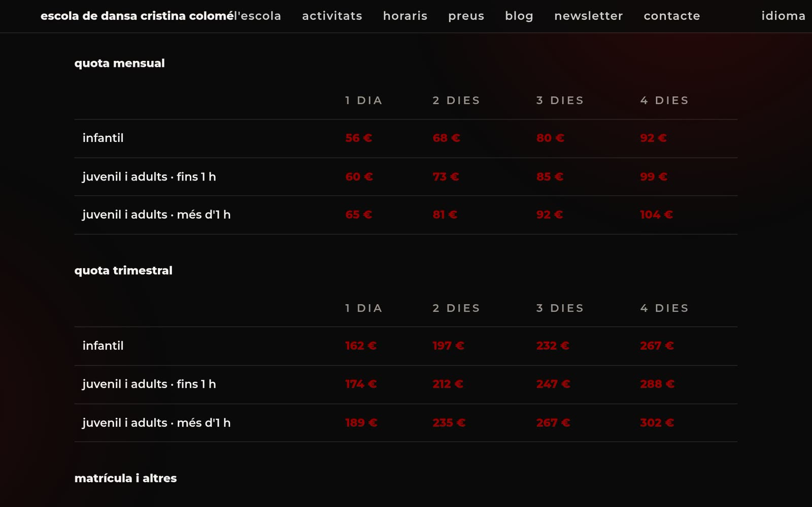
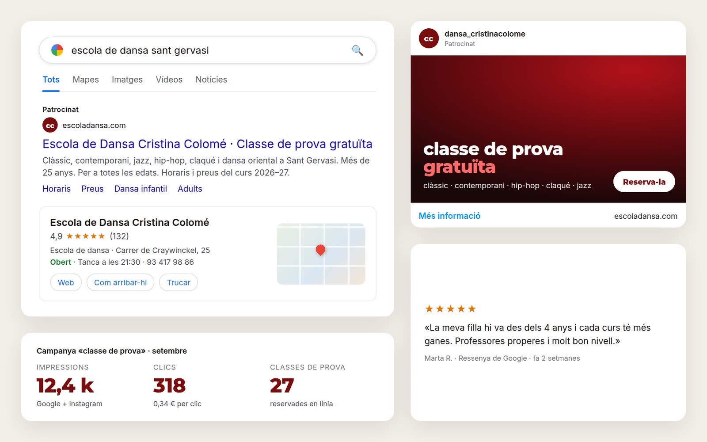
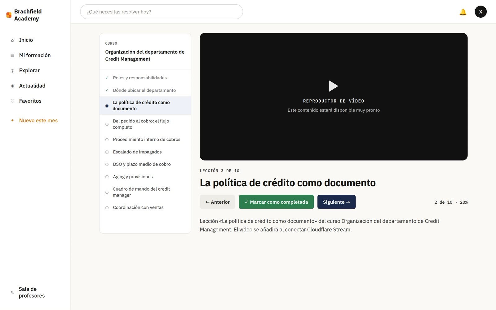
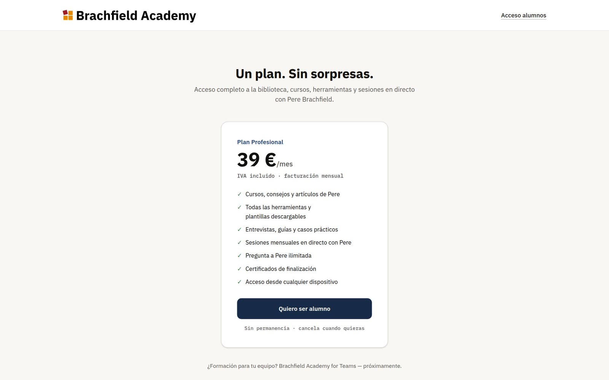
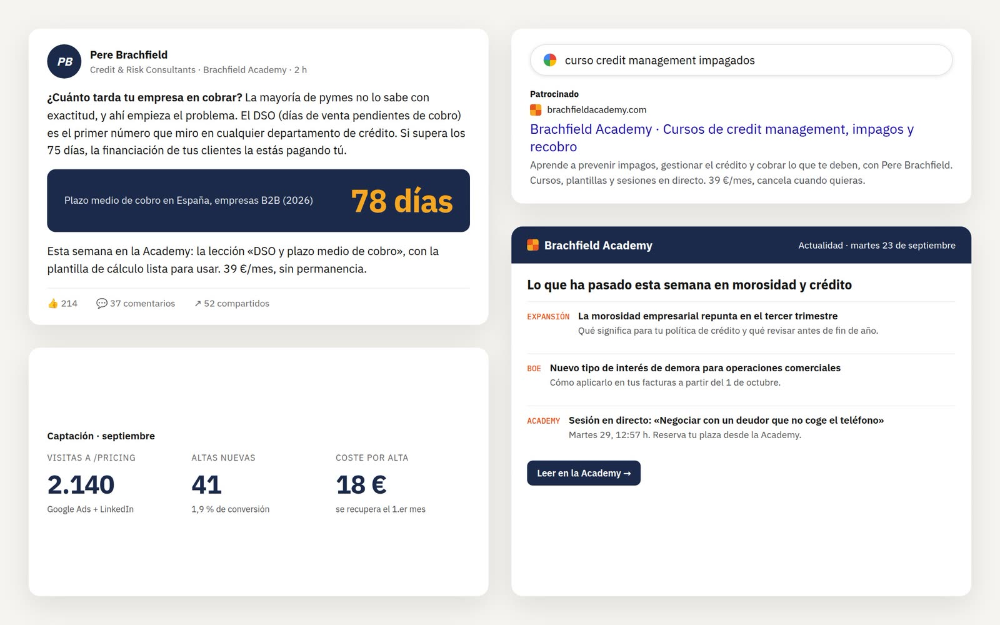
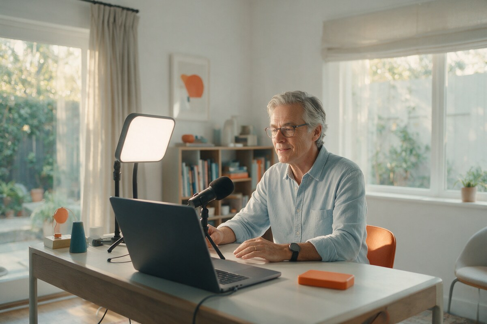

Escola de Dansa
- 01Presència
Web corporativa i blog
- 02Gestió
Eina d'administració: alumnes, horaris, pagaments…
- 03Venda
Inscripcions en línia
- 04Comunicació
SEO, paid media (Google, Meta), ressenyes…
A emoloc t'acompanyem amb una estratègia sòlida,
fent créixer el negoci, millorant la presència i guanyant en eficiència.
T'acompanyem amb una estratègia sòlida, fent créixer el negoci, millorant la presència i guanyant en eficiència.
Creem la teva pàgina web, botiga online, eina de gestió, blog, anuncis, etc.

Calçat fet a mà a Mataró. Des de 1998.

Ha arribat la motxilla Roure.

♡ 312 · Ulleres Cala, de nou en estoc
Sóc en Xavi Colomé. Fa més de 25 anys que treballo en digital: primer com a programador i dissenyador en agències, després dirigint marketing digital i ecommerce a Tous i Textura, i des del 2019 com a director digital de Castañer.
emoloc és la manera de portar aquesta experiència a negocis que no tenen departament digital però necessiten el mateix rigor. No és una agència: sóc jo, la manera de fer que he après en vint-i-cinc anys i la intel·ligència artificial com a equip.
Projectes que hem acompanyat fent-los créixer com a negoci, millorant la seva presència i guanyant en eficiència.


Web corporativa i blog
Eina d'administració: alumnes, horaris, pagaments…
Inscripcions en línia
SEO, paid media (Google, Meta), ressenyes…




Web comercial i blog
Eina d'administració de cursos i formació
Subscripció mensual a l'acadèmia
SEO, paid media (Google, Meta), ressenyes…
Articles curts per entendre què pot aportar la transformació digital al teu negoci.

15 de setembre de 2026 · Comunicació
Cada cop més gent pregunta a un assistent d'IA quina escola o quin despatx li recomana. Si la teva web no es pot llegir, no hi sortiràs.
Llegir l'article
1 de setembre de 2026 · Venda
Tens vint anys d'ofici i et diuen que facis "un curs en línia". La idea és bona, però una plataforma de membresia és força més que penjar vídeos.
Llegir l'article
15 d'agost de 2026 · Gestió
Un excel és una eina magnífica fins al dia que només l'entén una persona. Com saber si has arribat a aquest dia, i què fer-hi.
Llegir l'articleExplica'ns en quatre ratlles què fas, què et fa perdre temps o clients i què t'agradaria que passés. La primera conversa és sense compromís i serveix per veure si t'hi podem ajudar. Cada proposta és a mida.